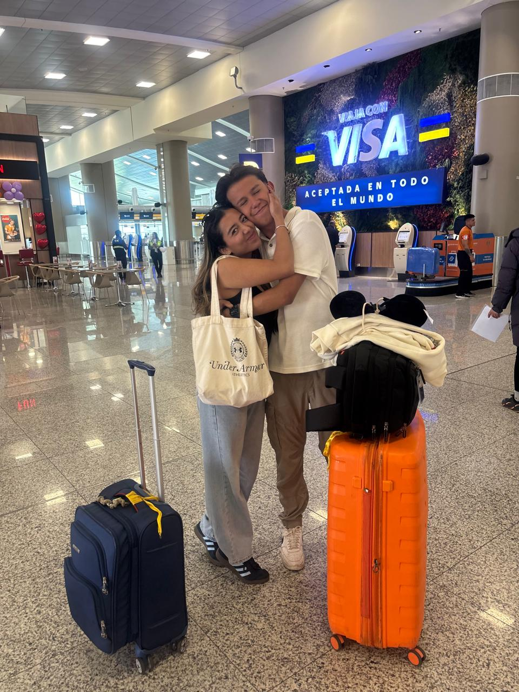

A lo largo de nuestra vida, la palabra "crisis" suele tener una connotación completamente negativa. Automáticamente la asociamos con caos, estrés, miedo y pérdida de control. Sin embargo, en mi proceso personal y reflexionando sobre mis experiencias recientes, me he dado cuenta de que esta visión es bastante limitante. ¿Qué pasaría si en lugar de ver una crisis como un callejón sin salida, la empezamos a ver como una página en blanco?

Tomar la decisión de cruzar el mundo para hacer mi intercambio universitario aquí en Taiwán fue, sin duda, uno de los retos más grandes a los que me he enfrentado. Las primeras semanas se sintieron, en muchos sentidos, como una pequeña "crisis" personal. El choque cultural, estar lejos de mi familia, de mis amigos y de mi novia, la barrera del idioma y el tratar de adaptarme a un ritmo académico y de vida totalmente distinto, me sacudieron por completo. Mi zona de confort había desaparecido de un día para otro y, de repente, me encontraba en un entorno donde todo era nuevo y, a pequeños ratos, abrumador.
Pero fue exactamente en ese punto de quiebre donde encontré la verdadera oportunidad. Entendí que esa sensación de crisis no era más que la vida empujándome a crecer, abrir nuevos horizontes. Al no tener mis antiguas rutinas habituales, me vi en la necesidad de desarrollar nuevas habilidades sociales, de ser mucho más empático y abierto con una cultura diferente, y de fortalecer mi resiliencia; en este punto fue donde el contenido de esta clase me ayudó muchísimo. Ese sentimiento de incomodidad inicial se transformó en el motor para salir a explorar, conectar con personas increíbles y para probarme a mí mismo que soy capaz de adaptarme.
Es como en el deporte: cuando el cuerpo siente que ya no puede más y entra en "crisis" durante un entrenamiento duro, es precisamente ahí donde el músculo se rompe para crecer más fuerte.
Hoy veo las crisis como filtros necesarios. Son esos momentos incómodos que nos obligan a reevaluar nuestras prioridades, a soltar lo que ya no nos sirve y a descubrir fortalezas que ni siquiera sabíamos que teníamos. Así que la próxima vez que me enfrente a un momento difícil o a un cambio radical, mi meta principal es cambiar la perspectiva y ver las crisis como oportunidades.
¿Qué te pareció? ¡Deja tu comentario!